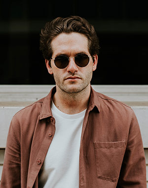

We`re Digital Yada Yada Interior Design Agency
Get support - interdis_sup@indis.com

We are team of exceptional designers, architects, and project managers. We specialize in designing and developing high end residential and commercial projects, as well as renovation and restoration Yada Yada. We believe in building a sustainable business that can add value for our clients.
Our mission is to build the most luxurious luxury spaces in the UK, with a focus on sustainability and social responsibility. Our goal is to offer both luxury and sustainable design services. About the Team: Sarah, the Creative Director of WME-IMG, a global technology and media company, leads a dynamic team of designers, illustrators and illustrators who strive to create beautiful and informative works. Sarah is known as a creative visionary, with a wealth of knowledge and expertise in design Yada Yada, illustration, and illustration. Her diverse skill set allows her to create stunning illustrations and illustrations for brands.
Our team of professionals understand each client‘ s budget, goals & individual needs as a whole, we will develop effective solutions for every project before Yada Yada reaching out to your customer's eyes in order find their ‘heart’ involved.
We are e of the few interior design firms that specialise in high end design for luxury apartments and high end luxury clients. We don’t make everything but we make something that is unique and special.
We focus on cutting edge, innovative designs by handpicked British designers whose skills and backgrounds align with our core values. Most of our collections are created as Yada Yada a collaboration between Daniel and his team (designers), but we also work alongside major record labels like Epic Records, Sony Music UK & Ireland and Warner Bros. Digital for music releases and visual merchandising.
We are studio located at the heart of London in the city centre. We are located at the top of King’s Road with a number of bars and restaurants right next door. We’d love to hear from you. For more information, please see our website at www.thehousedecay.com.
We are ways striving for growth and improving our skill set throughout the year. We want to work with you to create the best possible Yada Yada interior design solution for your business.
We work with designers to create interiors that are truly unique to their own brands. We work with architects to create spaces that best represent their clients’ goals. We work with interior designers to create space that’s unique to the client. We work with interior designers to create spaces that are designed to best reflect the client’s vision. We work with interior designers to create spaces that are beautiful and well thought Yada Yada out.
We are so passionate about quality. We believe in challenging ourselves every day to build better products, and we’re grateful for this opportunity.
The team behind the boutique label, Designboom, has been involved with creating a variety of stylish labels for over 10 years. Over time we acquired many talented people who helped develop designs into Yada Yada products as well at different levels of complexity and quality.
We are collection of designers and designers. Our experience in the industry combined with a clear and defined vision for a space means we can approach any project with a bold, clean and unpretentious approach.

We are sed in Leeds but provide services to more than 120 countries around the globe. Our interior design team has been working together for over 20 years and can work well with other teams. We are passionate about making Yada Yada beautiful and great spaces that will inspire you to live your best life possible. We believe that our customers’ needs are our top priorities. We design based on client requirements, while delivering high quality work to meet the client’s budget and needs.
We are ssionate about creating stylish, efficient and comfortable spaces that are just as functional as they are beautiful. Each room is designed with the utmost attention to details such as natural materials, custom-made furniture, light fittings and more. Our design team can provide an extensive Yada Yada amount of interior design expertise in any size from simple quarters, to luxurious apartments. We offer a variety of interior designs from a simple bedroom to a fully furnished home. Our studio specializes in custom projects for private and corporate clients.
We are rticularly driven by a passion for designing and a deep understanding of our clients’ interests. We provide a bespoke design and an interior design service which focuses on your goals, your time and your money.
We are team of dedicated professionals who bring a creative vision to the front of our minds. We respect the relationship between client and designer and are passionate about delivering the best results, no matter the budget. Our Yada Yada team consists of a mix of designers, graphic designers, composers, photographers, sound engineers, and artists. We design the design of our clients’ spaces to their personal needs and needs alone. We are an award-winning interior design studio.
Email: interdis_sup@indis.com
Phone: +123456789